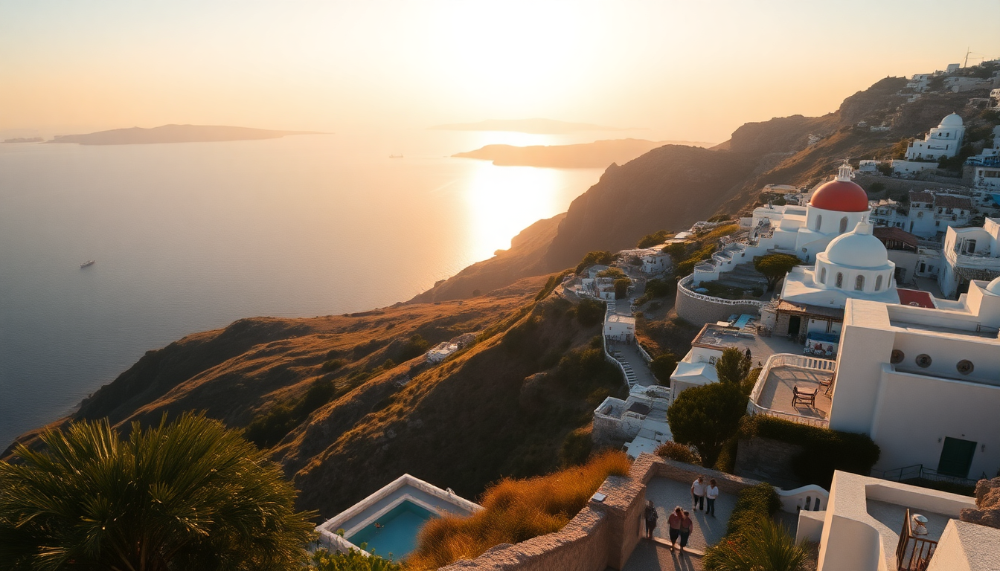

Best Time to Visit Greece in 2025: A Month-by-Month Guide

I’ve been burned by Greece twice—once in August on a ferry that felt like a sardine can, and once in January when the wind off the Aegean made me question my life choices. After a half-dozen trips across the mainland and islands, I’ve learned that “best time to visit” depends entirely on what you want: empty beaches or buzzing nightlife, €40 ferry tickets or €200 ones. This guide breaks down every month for 2025 so you can pick your window without the regret.
When is the best time for good weather without the crowds?
May and September are the sweet spots. The sea is warm enough to swim (especially in Crete), the meltemi winds haven’t kicked into full gear yet, and you can actually walk through the streets of Mykonos without elbowing someone. In May 2025, expect highs around 24°C in Athens and 22°C in Santorini—perfect for hiking the Fira-to-Oia trail without sweating through your shirt.
- Athens: Hit the Acropolis at 8 AM before the tour buses roll in; we grabbed coffee at Mona Lisa in Psiri after.
- Santorini: Book a sunset dinner at Metaxi Mas in Exo Gonia—it’s inland, cheaper than Oia, and the views still kill.
- Crete: The Samaria Gorge opens in May; start before 6 AM to beat the heat and the crowds.
- Mykonos: Skip the beach clubs in May—they’re half-empty and still overpriced. Stick to Agios Sostis for a quiet swim.
Should I visit Greece in peak summer (June–August)?
I’ll be blunt: July and August are a grind. I did Mykonos in mid-July 2023 and paid €180 for a room that smelled like bleach and had a view of a dumpster. The islands are packed, ferries sell out days in advance, and Athens feels like a pizza oven at 38°C. That said, if you want wild nightlife or have kids on school break, June is the best of the three—the meltemi winds haven’t kicked in yet, and the sea is already warm.
- June: Plaka in Athens is lively but manageable; we ate at O Thanasis for souvlaki and didn’t wait more than 10 minutes.
- July: Avoid Santorini’s Oia during sunset unless you enjoy a human traffic jam. Imerovigli has better views and fewer selfie sticks.
- August: If you must go, book the Blue Star Ferries to Crete two months ahead. We didn’t and ended up on a deck with no seats for five hours.
- Crete: The Elafonisi beach parking lot fills by 9 AM in August. Go to Falasarna instead—same pink sand, half the people.
Is spring (March–April) worth it for lower prices?
Yes, but pack a jacket. I visited Athens in late March and got hit with a hailstorm while climbing Lycabettus Hill. The upside: hotel rates in Plaka were half of what they’d be in June, and the National Archaeological Museum had zero queues. The downside: many island ferries run reduced schedules, and Santorini’s caldera-view restaurants are often closed for renovations.
- Athens: Stay at The Athens Gate Hotel near the Temple of Olympian Zeus—we got a room with a direct Acropolis view for €90 a night.
- Santorini: Most wineries like Vassaltis are open but quiet; you’ll get a tasting without the crowds.
- Mykonos: The island is a ghost town in March. I actually liked it—empty streets, no club music, and Kiki’s Tavern was walk-in only.
- Crete: The Knossos Palace site is manageable in April; we spent an hour there without jostling.
What about autumn (October–November)? Is it too cold?
October is a sleeper hit. The sea in Crete stays warm through mid-October, flights from the US and UK drop by 40%, and the crowds vanish. I did a week in October 2022 and swam at Balos Lagoon with maybe 20 other people. By November, though, most island hotels shut down, and the wind picks up hard. Stick to Athens and Crete if you’re going that late.
- October: Heraklion’s market street, 1866 Street, is perfect for leather sandals and cheap olive oil—haggle, they expect it.
- November: Base yourself in Athens’ Koukaki neighborhood. We ate at Mani Mani for creative Greek food and had the place half-empty.
- Crete: Rent a car in Chania and drive to Loutro—a car-free village only accessible by boat or foot. November is dead quiet.
- Santorini: Most caldera hotels close by late October. Save your money and come back in spring.
Is winter (December–February) a complete waste?
Only if you want beaches. If you’re into ruins, food, and cheap flights, winter is underrated. I spent New Year’s in Athens and paid €50 a night at Hotel Plaka, a 10-minute walk from the Acropolis. The Acropolis Museum was empty, and I had the Temple of Poseidon at Sounion to myself on a crisp January afternoon. Just know that many island ferries stop running, and Mykonos and Santorini basically hibernate.
- December: Syntagma Square in Athens has a Christmas market that’s kitschy but fun; grab a loukoumades from Lukumades.
- January: The Athens Epidaurus Festival is off-season, but the Benaki Museum is open and uncrowded.
- February: Crete’s Carnival in Rethymno is a blast—locals go all out with costumes and parades, and tourists are rare.
- Mykonos: Don’t bother. We checked—Little Venice was deserted, and the only open restaurant was a souvlaki shop with sad pita.
FAQ
Is Greece too crowded in July 2025? Yes, especially Santorini and Mykonos. The Greek government is capping cruise ship arrivals in Santorini starting 2025, but it won’t fix the land crowds. If you’re set on July, pick Crete or a lesser-known island like Naxos—we swapped Mykonos for Naxos one summer and had empty beaches and €30 rooms.
What’s the cheapest month to fly to Greece? November and February. I’ve seen round-trip flights from New York to Athens for under $400 in November. Hotels in Psiri or Exarchia drop below €60 a night. Just avoid Christmas week, when prices spike briefly.
Can I swim in the sea in October? In Crete, yes. The southern coast—places like Matala and Preveli Beach—stays warm into mid-October. In Santorini and Mykonos, the water gets choppy and cool by late September. I swam at Agios Pavlos in Crete on October 12 and it was fine.
Conclusion
- May and September are your best bets for weather, crowds, and value across Athens, Santorini, Mykonos, and Crete.
- June works for nightlife and families, but book ferries and hotels early.
- July and August are overpriced and packed—only go if you have no other window.
- April and October are solid for budget travelers who don’t mind a little wind or rain.
- November through February is for Athens and Crete only; skip the islands entirely.